![Editor with the synthetic SOAP note rendered after NER and Classify ran against the medical mock. The three medical entities (type 2 diabetes mellitus DISEASE, aspirin MEDICATION, metformin MEDICATION) appear as inline highlights, with the MEDICATION tooltip visible. The Document Tags panel on the right shows the ICD-10 chapter Endocrine, nutritional and metabolic diseases and the subcategory Type 2 diabetes mellitus returned by medical-mock /v2/categorise. The medical adapter normalises a divergent upstream shape into the platform's internal value objects, end-to-end, without any UI change.](images/07a-editor-soap-medication-tags.png)
This gallery documents the live reproduction of the three
configurability dimensions reported in Section~5.4 of the thesis. Each
screenshot was captured against a clean checkout of the source
repository, brought up through the
docker-compose.postgres.yml Compose file, with no
application source code modified between dimensions. Screenshots are
grouped by dimension.
UI evidence (editor and admin views) is paired with infrastructure evidence (terminal output from the running containers and the PostgreSQL database), so each claim can be verified at both layers.
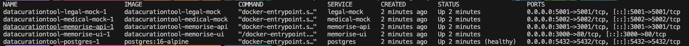
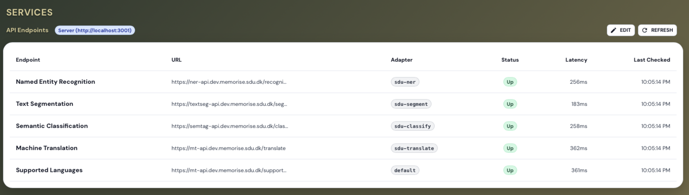
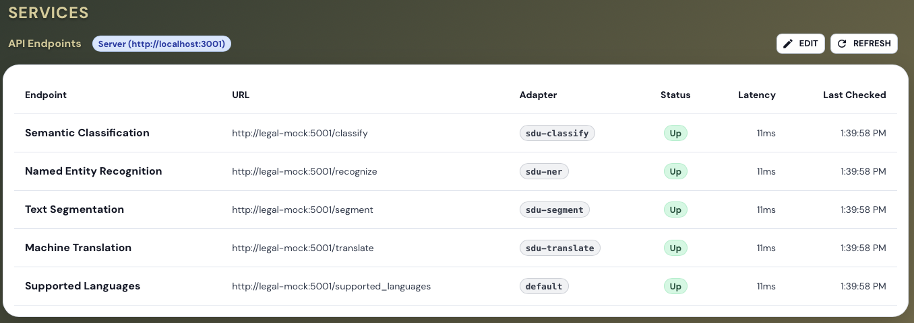
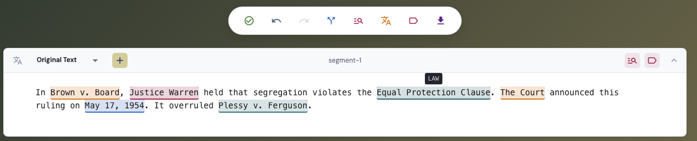
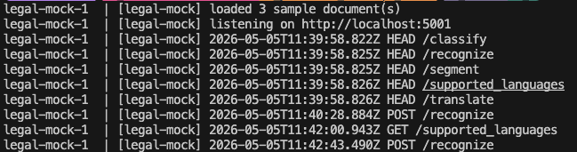
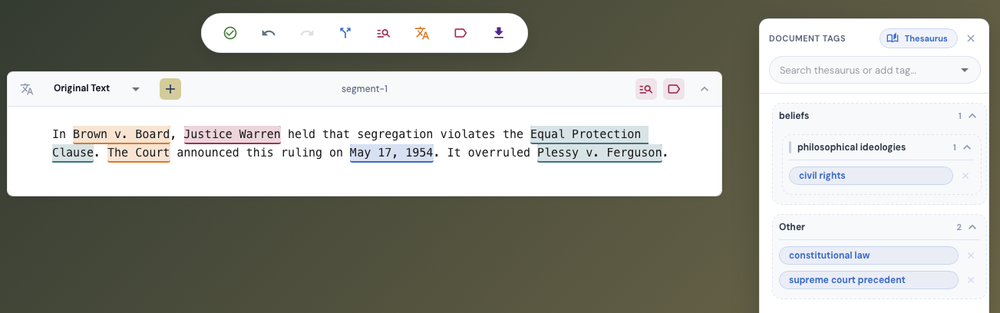
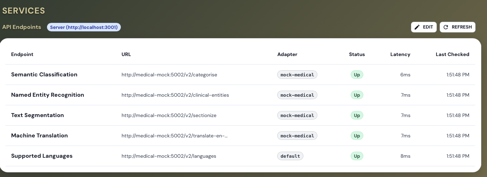
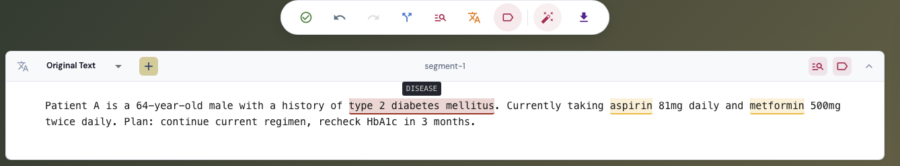
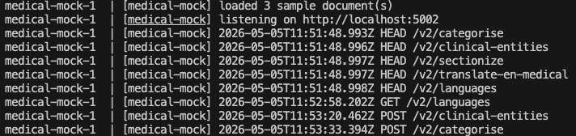
\begin{figure}[H] \centering \begin{minipage}[t]{0.46\textwidth} \centering \includegraphics[width=\linewidth]{images/09a-shape-diff-top.png} \end{minipage}\hfill \begin{minipage}[t]{0.46\textwidth} \centering \includegraphics[width=\linewidth]{images/09b-shape-diff-bottom.png} \end{minipage} \caption{Raw response from \texttt{medical-mock /v2/clinical-entities} printed via \texttt{curl ... | jq}, split across two columns for legibility. The payload carries a \texttt{metadata} block, entity buckets keyed by \texttt{DISEASE} and \texttt{MEDICATION}, ICD-10 and RxNorm \texttt{codes}, structured \texttt{attributes} (dose, frequency, route), and per-entity \texttt{confidence}. The \texttt{MockMedicalNerAdapter} collapses this shape into the flat \texttt{{start, end, entity, score}} form consumed by the application layer (the upstream \texttt{type} field is renamed to \texttt{entity} during normalization).} \end{figure}
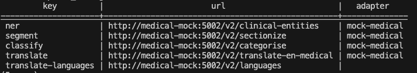
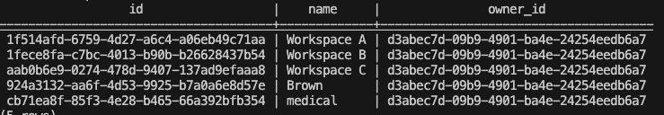
![Restart survival sequence captured top-to-bottom: (1) psql returns the medical-mock endpoint config (5 rows), (2) docker compose ... down removes the containers without -v so the volume is preserved, (3) docker volume ls | grep postgres shows datacurationtool_postgres-data still present, (4) docker compose ... up -d re-creates the containers, (5) psql after the restart returns identical 5 rows. The platform's persistent state is external, multi-process-safe, and survives container teardown without any application-side handling — the property §5.4.4 claims.](images/12-postgres-survival-restart.png)